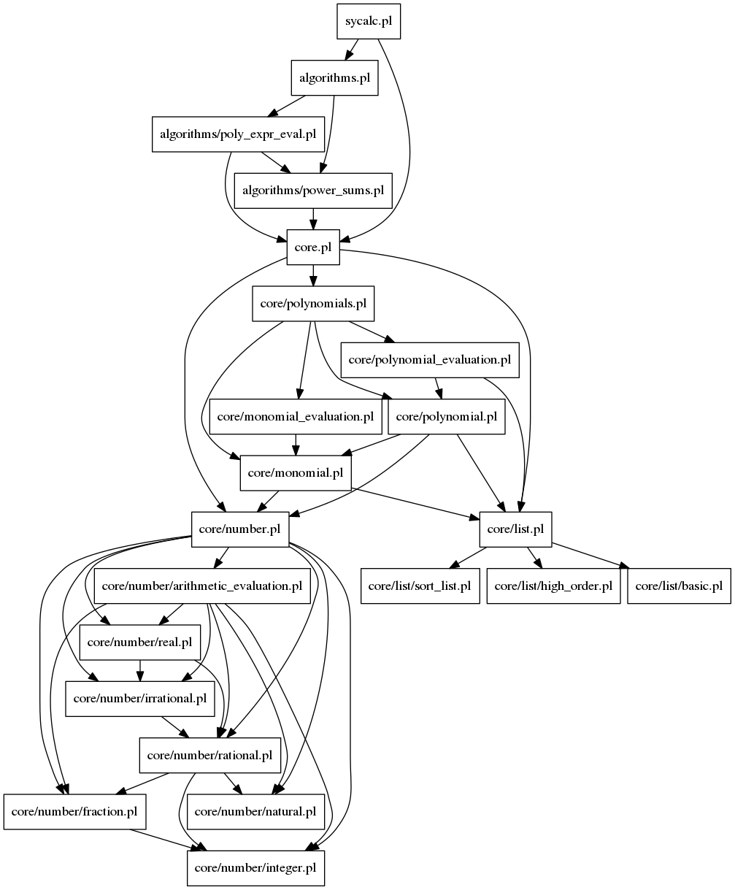

Documentation for Prolog file: sycalc.pl
File used to make the interactive version of this symbolic calculator.
By:
Lluís Alemany Puig
On:
August 5th, 2018

Included files:
core.html
algorithms.html
Generated with DYP